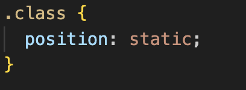
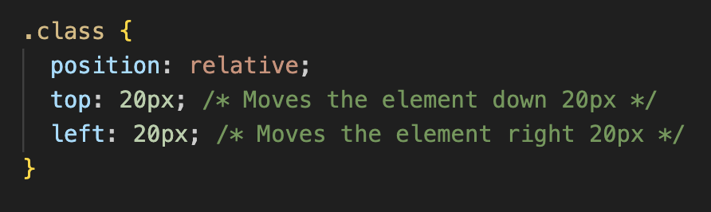
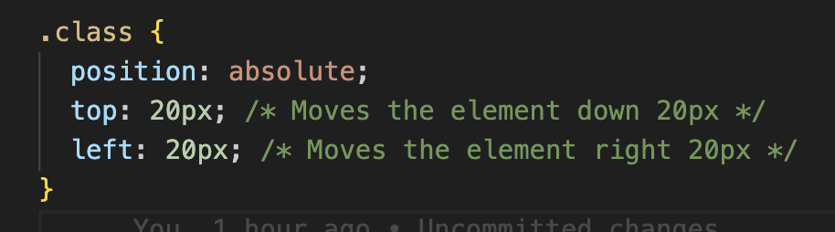
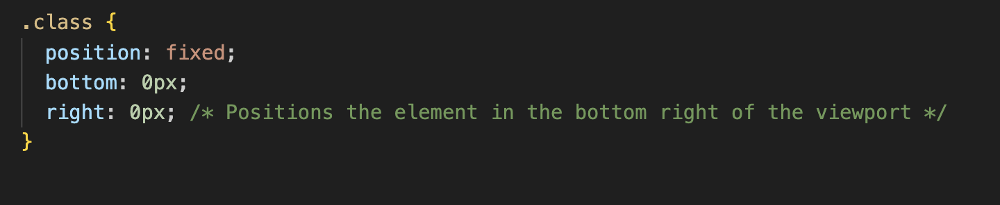

Sprint 2 Technical Blog - CSS Positioning
04 April, 2025
For my sprint 2 technical blog post, I've chosen to write about CSS positioning.
CSS properties are used to alter the way elements in an HTML document appear in a browser. The “position” property specifies an element’s position. Every HTML document has a natural flow (document flow) of elements, i.e the natural order and positioning of elements. By adding position properties to elements with CSS, we can change where the elements appear on a page.
In this post, I’ll be looking at the difference between four positioning styles:
- Static
- Relative
- Absolute
- Fixed
Along with these positioning styles, there are four more properties that can be used to further specify an element’s position. They are:
- top
- right
- bottom
- left
Static Positioning
When an element’s position is unspecified, it has static positioning by default. To specify static positioning, use:
An element with a static position will be positioned in its normal place in the document flow. Specifying this style may seem unnecessary, but can be useful if you want to avoid other CSS styles affecting an element’s position.
Note: The “Top, Right, Bottom, Left” properties have no effect on an element with static positioning.
Relative Positioning
An element with relative positioning is positioned relative to its default (static) position. To set an element’s position to relative, use:
We can use the top, right, bottom, left specifiers to position the element.
These properties can be confusing, because “left” moves an element to the right, “top” movies an element down, and so on. The best way to understand this is to imagine a reference frame where the element would normally be. Moving an element with “left: 20px;” adjusts its position so that its left edge is 20px to the right of where it would normally be. Using “right: 20px;” would do the inverse, so that the element’s right edge is now 20px to the left of where it would normally be.
Giving an element relative position does not take it out of the document flow. All other elements on the page will behave as if it’s still in its original position.
Absolute Positioning
In HTML, elements are often nested within each other, and these are often referred to as parent-child relationships. By setting an element’s position to absolute, it is positioned relative to its nearest ancestor with specified positioning. An element can’t be set to have absolute positioning relative to a parent with static or unspecified positioning. If no ancestors with relative, absolute or fixed positioning exist, the element will be positioned relative to the html element, which generally means it’s positioned relative to the viewport.
To set an element’s positioning to absolute, use:
We can use the top, right, bottom, left properties the same way as we do for an element with relative positioning.
Giving an element absolute positioning will take it out of the document flow, and other elements will behave as if it’s not there.
Fixed Positioning
We set an element’s positioning to fixed like this:
This set’s the element’s position relative to the viewport, meaning it always stays in the same position. It doesn’t scroll with the rest of the webpage. The element is taken out of the document flow, meaning other elements will position themselves as if it’s not there.
To make an element with fixed positioning responsive to screen size, we can use units like vh and vw, instead of pixels. This means we can make sure an element always stays in the middle of the screen, e.g. a popup add.
Summary
| Position Relative to | Stays in Document Flow? | Scrolls with Page | |
| static | N/A | Yes | Yes |
| relative | Original position | Yes | Yes |
| absolute | Nearest non-static ancestor | No | Yes |
| fixed | Browser viewpoint | No | No |